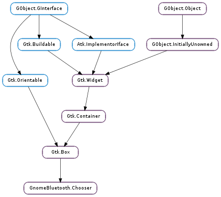

| Name | Type | Flags | Description |
|---|---|---|---|
| device-selected | str | r/w | The Bluetooth address for the currently selected device, or None |
| device-service-filter | str | w | A string representing the service to filter for |
| device-type-filter | int | r/w | A bitmask of GnomeBluetooth.Type to show |
| has-internal-device-filter | bool | r/w/c | Whether the GnomeBluetooth.Chooser should be constructed with a visible GnomeBluetooth.FilterWidget |
| show-connected | bool | r/w | Whether to show the connected column in the tree. |
| show-device-category | bool | r/w | Whether to show the device category filter |
| show-device-type | bool | r/w | Whether to show the device type filter |
| show-device-type-column | bool | r/w | Whether to show the device type column |
| show-pairing | bool | r/w | Whether to show the pairing column in the tree. |
| show-searching | bool | r/w | Whether to show the Searching label , this is necessary if you want to programmatically start a discovery, using GnomeBluetooth.Chooser.start_discovery () |
| Name | Parameters | Return | Description |
|---|---|---|---|
| selected-device-activated | str | The GnomeBluetooth.Chooser ::selected-device-activated signal is launched when a device is double-clicked in the chooser. | |
| selected-device-changed | str | The GnomeBluetooth.Chooser ::selected-device-changed signal is launched when the selected device is changed, it will be None if a device was unselected. |
Bases: Gtk.Box
| Returns: | A GnomeBluetooth.Chooser widget |
|---|---|
| Return type: | Gtk.Widget |
Returns a new GnomeBluetooth.Chooser widget.
Prints all the known attributes for the currently selected device on the standard output. Useful for debugging.
| Returns: | a Gtk.ScrolledWindow object. |
|---|---|
| Return type: | Gtk.Widget |
Returns the Gtk.ScrolledWindow object for the GnomeBluetooth.Chooser. This is useful to set a minimum height to the chooser using Gtk.ScrolledWindow.set_min_content_height () or to join the chooser with a toolbar.
| Returns: | the Bluetooth address for the currently selected device, or None. |
|---|---|
| Return type: | str |
Returns the Bluetooth address for the currently selected device.
| Returns: | the icon name to use to represent the currently selected device, or None. |
|---|---|
| Return type: | str |
Returns the icon name to use to represent the currently selected device.
| Parameters: |
|
|---|---|
| Returns: | True if the value has been set. |
| Return type: |
Returns whether the value has been set.
| Returns: | whether the selected device is connected to this computer, will always be False if no devices are selected. |
|---|---|
| Return type: | bool |
Returns whether the selected device is connected to this computer.
| Returns: | the name for the currently selected device, or None. |
|---|---|
| Return type: | str |
Returns the name for the currently selected device.
| Returns: | the GnomeBluetooth.Type of the device selected, or ‘0’ if unknown. |
|---|---|
| Return type: | GnomeBluetooth.Type |
Returns the GnomeBluetooth.Type of the device selected.
Starts a discovery on the default Bluetooth adapter. Note that this will only work if the Search label is visible, as otherwise the user has no visual feedback that the process is on-going.
See also: GnomeBluetooth.Chooser :show-searching
Stops a discovery started with GnomeBluetooth.Chooser.start_discovery.